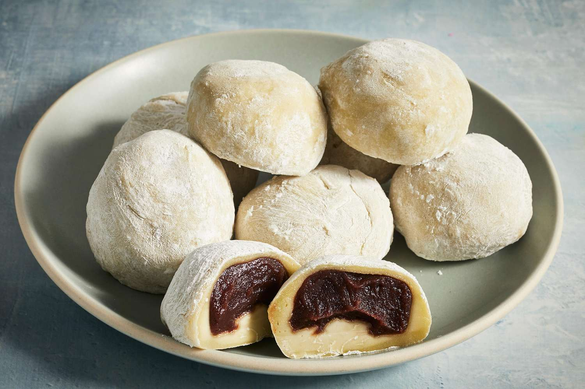

Mochi

Description
Make some homemade mochi to satisfy your sweet desire. Trust us: It's far easier than you would imagine. With just a few ingredients, you can easily prepare this simple mochi recipe.
Mochi, also known as mochigome, is a sweet confection in the shape of a bun that is popular in Japan. It has a stretchy, squishy feel that is chewy. Matcha, or green tea powder, is frequently used to flavor mochi, giving it a light green colour.
ingredients
- 1 cup sweetened red bean paste
- 1 cup glutinous rice flour
- 1 teaspoon green tea powder (matcha)
- 1 cup water
- ¼ cup white sugar
- ½ cup cornstarch, for rolling out the dough
Steps
- Wrap red bean paste in aluminum foil and place in the freezer until solid, at least 1 hour.
- Mix glutinous rice flour and green tea powder thoroughly in a microwave-safe bowl. Stir in water, then sugar; mix until smooth.
- Cover the bowl with plastic wrap and microwave for 3 minutes 30 seconds.
- Meanwhile, remove red bean paste from the freezer and divide into 8 equal balls. Set aside.
- Remove rice flour mixture from the microwave. Stir and heat, covered, for another 15 to 30 seconds.
- Dust a work surface with cornstarch. Roll about 2 tablespoons of hot rice flour mixture into a ball. Flatten the ball and place one ball of frozen red bean paste in the center. Pinch and press the dough around the bean paste until completely covered. Sprinkle with additional cornstarch and place mochi, seam-side down, in a paper muffin liner to prevent sticking.
- Repeat Step 6 to make remaining mochi.
Nutrition Facts
- Calories: 183
- Fat: 0g
- Carbs: 43g
- Protein: 3g
Back to top of page
Return to Homepage